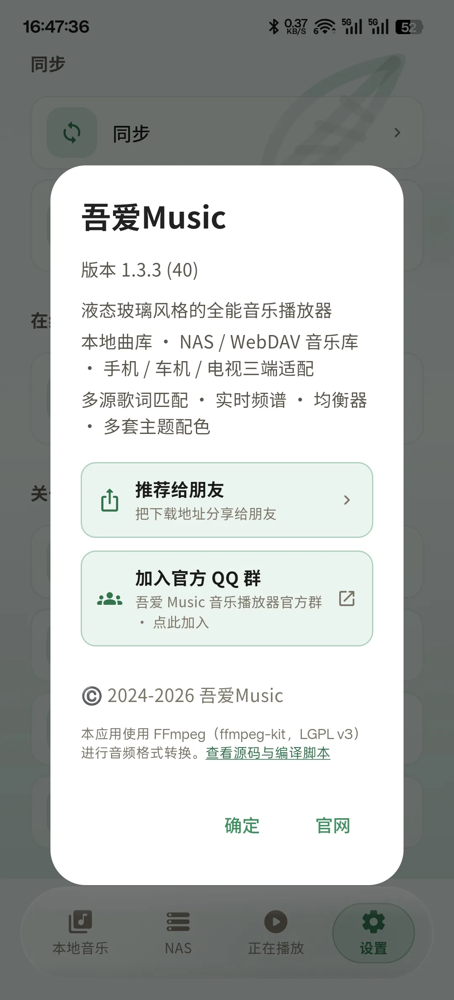
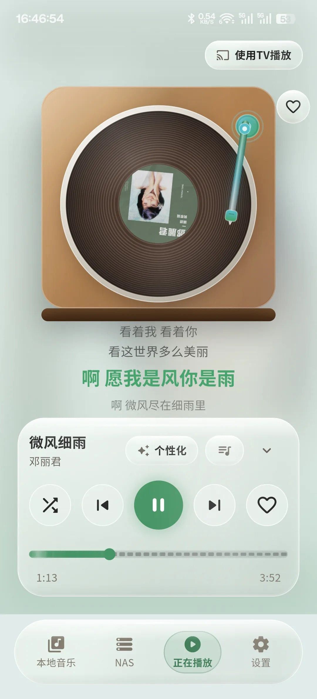
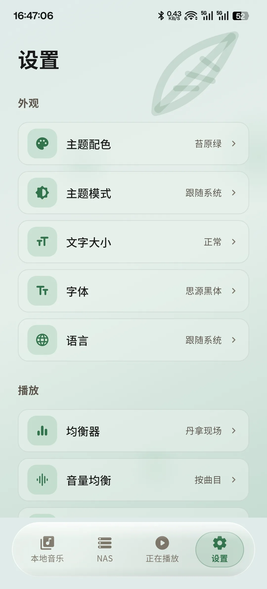
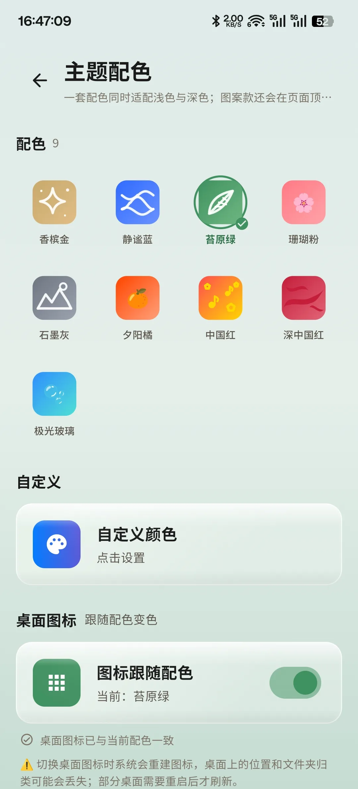
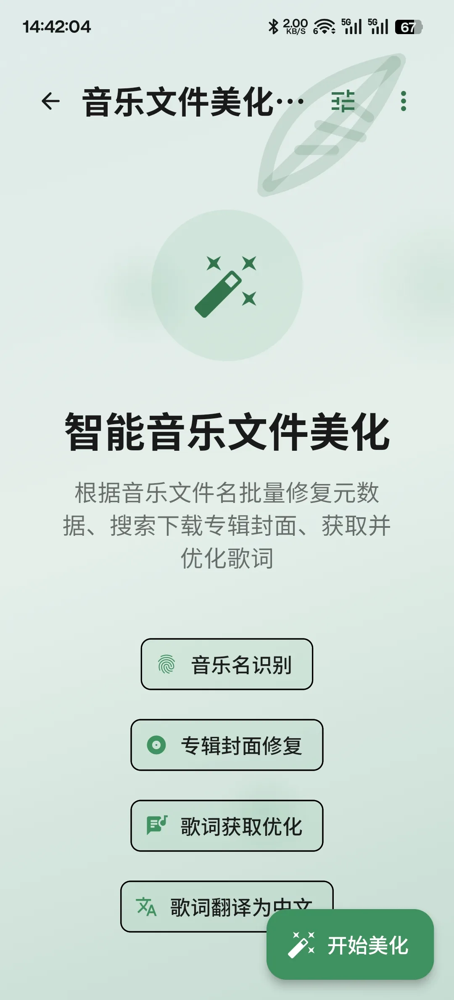

吾爱Music 手机版
吾爱Music 手机版为随身场景而造
曲库、歌词、音效、可视化，手机上一样不少。所有处理都在本机完成，断网照常听。
16种音频格式直通
22套主题配色
AI大模型生成歌词
4款可视化
01
本地 + NAS 统一曲库
手机存储、外置卡、SMB 与 WebDAV 共享目录，在同一个曲库里一起检索。NAS 目录还能整目录缓存到本地，出门没网也能听。
02
智能歌词系统
大模型现场生成歌词，逐字高亮；歌词偏移自动学习，微调一次就记住。同目录 .lrc 与内嵌歌词双支持。
03
批量音乐美化
补全标签与封面、内嵌歌词、批量重命名，支持勾选范围与一键撤销，每次写入都有日志可查。CUE 曲目受专门保护，不会拆坏整轨专辑。
04
均衡器与可视化
专业均衡器按需调音；液态极光、黑胶唱片、星云律动、音乐喷泉四款可视化，让每一首都有看得见的节奏。
看得见的用心
下面是手机版真实界面截图，来自真机运行。






最近更新 · 研发成果 · 进度
版本记录与官方发布清单实时同步，研发成果来自工作室公开的白皮书。